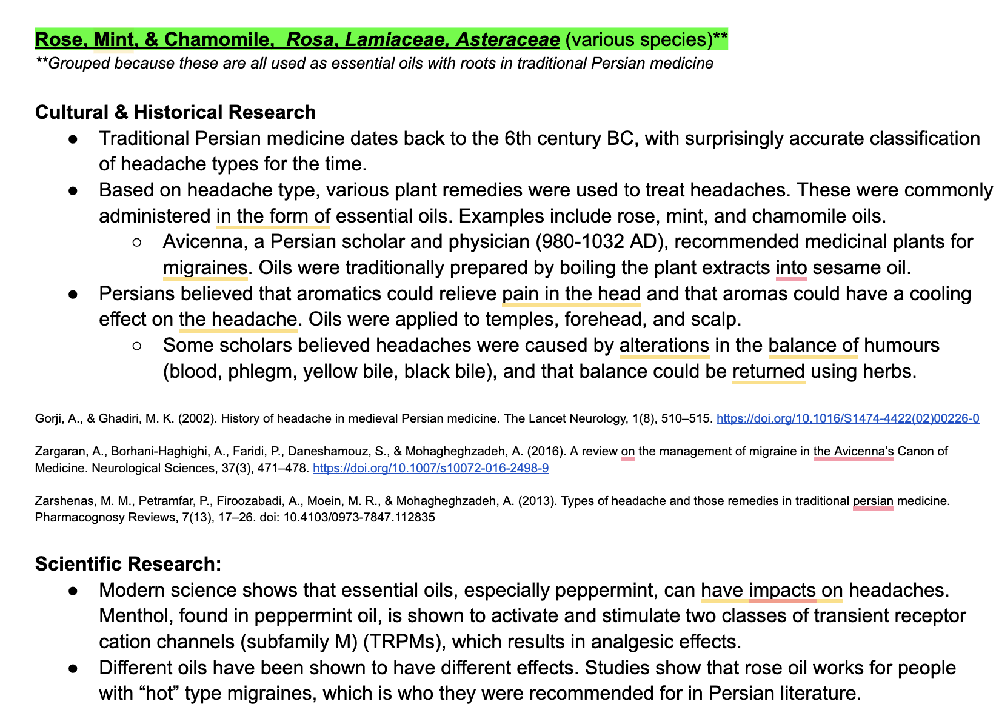
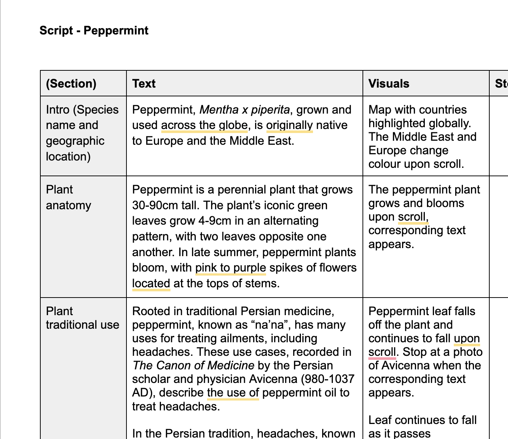
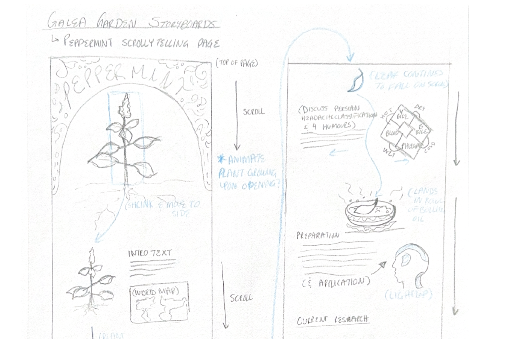
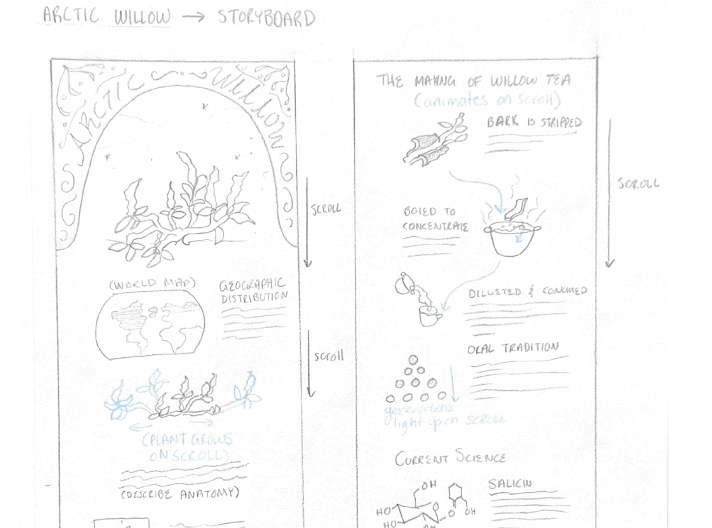

DevDiaries Entry 1
8/February/2026
What I Worked On
Research and Script Writing for Galea Garden
As the research and script writing lead for the Galea Garden project, I worked on gathering information about the relevant cultural history for plants we are showcasing. I also worked with ella on a content script for our scrollytelling site.
- Research tools used - U of T Libraries, Google Scholar, Zotero
- Script writing tools used - Google docs
Progress Screenshots


Reflection
Working on the reseach aspect of the Galea Garden project has opened my eyes to the importance of exploring historical medical reserach from different cultures. Being in science programs for both my undergraduate and now graduate studies, I am used to focusing on Western scientific research and data analysis, without paying much attention to the historical or cutlural roots of medical practices. However, while reseraching for this project, I have come to appreciate the value of historical research and the insights it can provide into the development of medical knowledge and practices. I have also come to appreciate the importance of considering different cultural perspectives in medical research, as this can lead to a more comprehensive understanding of health and wellness. For instance, I found the reserach on the use of willow bark by various Indigeouns communities to be very interesting, as the Indigenous way of knowing introduced me to the idea of both using something for its medical value, but also appreciating where it came from and what it is providing you. When doing this reasearch, I also learned about the importance of using primary sources when doing historical research. This was esepcially important for Indigenous research, as much of the knowledge is passed down orally, and not well documented. I made sure to look for sources that were primary or cited primary sources to ensure that what I was reseraching was accurate to the traditional knowledge I was trying to explain.
In addition to working on research, this week I also worked with Ella on creating a script for our scrollytelling site. I found this to be more challenging than I had expected, as we had to decide on many aspects of how we wanted to tell the story, including what kind of flow we wanted, what information to keep or leave out, which writing style we would use. We generally decided to use a similar storytelling format for all three of our case study plants (arctic willow, butterfly pea, and peppermint), starting with introductory facts about plant distribution and anatomy, then going into traditional cultural uses, and finally modern research on the plant. We found that this natrual flow worked best for communicating what was wanted to say.
Overall, after this week, I feel I have a much better understading of how the story will flow and how the infomration will be presented. I am looking forward to continueing to make progress on this project in the coming weeks.
DevDiaries Entry 2
13/February/2026
What I Worked On
Storyboarding
As part of the storyboarding team for this project, this week I worked on storyboarding some of our pages. These pages included:.
- Peppermint Page - Created scrollytelling storyboard
- Arctic Willow Page - Created scrollytelling storyboard
Progress Screenshots


Reflection
This week, I worked on storyboarding the scrollytelling site for our project. I found this process to be very helpful in visualizing how the content would be presented to users and in identifying any gaps in the narrative flow. I found it challenging to create storyboards for an interactive site like ours, as I have only ever previously worked on storyboarding for animation. I think this is a valuable skill to learn and practice, as I found there were many more things to consider in interactive storyboarding, namley how the page might act if the user scrolls backwards; this is different from animation where this is not really a concern.
I found the storyboarding process to be fun and different. It was interesting to think of different interactive elements that the user could interacte with, such as a possible slider for the male or female flowers of the acrtic willow (which are different in appearance). Overall I am looking forward to seeing how this project continues to evolve!